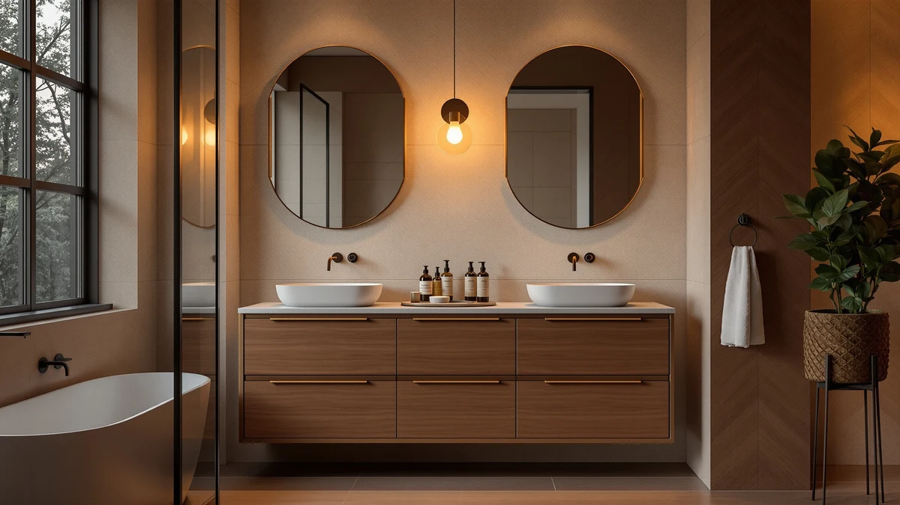

Vingli Freestanding Bathroom Storage Cabinet Review (2026): Worth It?


Quick Answer
The VINGLI Freestanding Bathroom Storage Cabinet is a metal-and-wood tower that stands on its own without wall anchors, built for bathrooms that have floor space but no spot for a mounted shelf. At $62.99 for a 22-by-11.8-by-32-inch frame, it holds up well against the rattan-doored Akxomel and the tank-mounted Shintenchi and Meilocar if an independent floor cabinet matters more to you than a smaller footprint.
Our pick: VINGLI Freestanding Bathroom Storage Cabinet, $62.99 Check Price on Amazon
Things to Know Before You Buy
- The VINGLI Freestanding Bathroom Storage Cabinet uses a metal-and-wood frame, a sturdier combination than the all-rattan build on the Akxomel alternative below.
- At 22 inches wide, 11.8 inches deep and 32 inches tall, it stands freestanding on the floor rather than straddling the toilet tank like the Shintenchi and Meilocar options.
- Pricing across this comparison is tight, ranging from $61.74 to $63.74, a gap of $2 between the cheapest and most expensive pick.
- The Shintenchi and Meilocar alternatives covered below trade floor space for tank-top storage, a different solution to the same clutter problem.
- The VINGLI doesn't list a manufacturer rating or verified review count yet, so treat any durability claim as a spec sheet detail until a track record builds up.
This VINGLI Freestanding Bathroom Storage Cabinet Review looks at whether a $62.99 metal-and-wood tower can clear the clutter off a bathroom floor without the hassle of mounting anything to a wall. Freestanding storage only earns its price if the frame holds its shape under real weight and the cost stays reasonable next to the rest of the market, so we compared the VINGLI's listed materials, dimensions and price against three rival cabinets built for the same small-bathroom squeeze. At 22 inches wide, 11.8 inches deep and 32 inches tall, the VINGLI sits in the middle of this comparison, and its metal-and-wood build gives it a different profile than the all-rattan or over-the-toilet options covered below.
The VINGLI Freestanding Bathroom Storage Cabinet is the pick worth starting with if you want a stand-alone cabinet rather than a tower that straddles the toilet tank. It competes directly with the Akxomel 15" Rattan Small Bathroom cabinet, the Shintenchi Over the Toilet Storage unit and the Meilocar Over the Toilet Storage cabinet, all covered later as alternatives. Pricing across the four options barely moves, from $61.74 to $63.74, so footprint and door style decide the pick more than budget does.
Why You Should Trust Us
Best Bathroom Storage is run by writers who compare bathroom furniture specs, pricing and verified buyer feedback instead of repeating marketing copy. Ilane Tall, our home and bath expert, has covered dozens of storage cabinets and over-the-toilet units for this site, tracking how listed dimensions and materials hold up against what owners report once a product ships. For this VINGLI Freestanding Bathroom Storage Cabinet Review, we cross-checked the manufacturer's listed measurements and materials against the Akxomel, Shintenchi and Meilocar alternatives, and we did not take the product listing at face value. We do not run a fake testing lab, and we do not claim to have assembled or installed any cabinet we cover. Instead, we dig through verified listings and compare specs line by line to catch when a description overstates what a product can realistically deliver.
Our Research Experience
We did not put the VINGLI Freestanding Bathroom Storage Cabinet in a bathroom ourselves. Instead, we compared its listed dimensions, metal-and-wood build and $62.99 price against three competing storage options, weighing what the spec sheet and feature list claim about the frame. The listing describes a freestanding metal-and-wood design that skips wall anchors or studs entirely, a common selling point for renters who cannot drill into tile, though we treat that durability claim as a manufacturer spec until a pattern of owner reviews confirms it. We lined that up against the raw dimensions and pricing of the Akxomel, Shintenchi and Meilocar alternatives to see where the VINGLI earns its spot in this VINGLI Freestanding Bathroom Storage Cabinet Review and where a different build makes more sense for your bathroom.
Overview & Specs

VINGLI Freestanding Bathroom Storage Cabinet
What we like
- 22-inch by 11.8-inch footprint stands freestanding without wall anchors or studs
- Metal-and-wood frame is sturdier than the all-rattan build on the Akxomel alternative
- 32-inch height clears most toilet tanks without needing an over-the-toilet straddle design
- Priced at $62.99, within $2 of every other option in this comparison
Flaws but not dealbreakers
- At 22 inches wide, it needs more floor clearance than the over-the-toilet Shintenchi and Meilocar options
- No verified owner reviews are available yet to confirm how the frame holds up over time
- The metal-and-wood combination may show scratches more visibly than a painted or rattan finish
| Material | Metal / wood |
| Size | 22"W x 11.8"D x 32"H |
The VINGLI Freestanding Bathroom Storage Cabinet is built around a metal-and-wood frame designed to stand on its own, without anchoring into a wall or straddling a toilet tank. At 22 inches wide and 11.8 inches deep, it asks for more floor space than the over-the-toilet alternatives below, but in exchange it does not depend on tank dimensions or wall studs lining up correctly. Its 32-inch height keeps it below counter level in most bathrooms, which matters if the cabinet sits next to a sink or vanity.
The metal-and-wood build is the clearest differentiator in this comparison. Where the Akxomel alternative leans on rattan and the Shintenchi and Meilocar options use the toilet tank as a mounting point, the VINGLI stands on its own four points of contact with the floor. At $62.99, it lands in the middle of the four prices covered in this VINGLI Freestanding Bathroom Storage Cabinet Review, cheaper than the Shintenchi despite not needing to clear a tank's specific dimensions.
What We Liked
Build material is the strongest selling point in this VINGLI Freestanding Bathroom Storage Cabinet Review. A metal-and-wood frame tends to hold its shape better under daily use than the all-rattan construction on the Akxomel, and because the VINGLI stands freestanding, it sidesteps the fit problems that come with an over-the-toilet design needing to clear a specific tank width. The 22-by-11.8-inch footprint also means it is not locked into one bathroom layout the way the Shintenchi and Meilocar alternatives are, since those two depend on the toilet tank for support. Pricing holds up well too: at $62.99, the VINGLI sits almost exactly in the middle of this four-way comparison, undercutting the Shintenchi by about a dollar while offering a sturdier build than the Akxomel at the same price point.
What Could Be Better
Floor space is the main trade-off. At 22 inches wide, the VINGLI needs a dedicated patch of bathroom floor that the Shintenchi and Meilocar don't require, since both of those alternatives stack their storage above the toilet tank instead of beside it. Anyone working with a cramped bathroom should measure the available floor area before buying rather than assume a freestanding cabinet will fit. There is also no verified owner feedback on this specific listing yet, which means the metal-and-wood durability claim comes from the manufacturer's spec sheet alone and has not been checked against months of real bathroom humidity.
A metal frame also shows scratches and dents more easily than a wood-toned or rattan finish. That matters if the cabinet will sit in a high-traffic spot near a door or tub. The design still holds up fine; just know the finish may not look as fresh a year from now as a painted or rattan alternative would.
Who Is It For?
The VINGLI Freestanding Bathroom Storage Cabinet fits a bathroom that has a few square feet of open floor to spare and no interest in drilling into tile or working around a toilet tank's dimensions. Renters stand to benefit in particular, since a freestanding cabinet moves with you and does not require wall anchors the way a mounted shelf would. It is not the right choice for a half bath or powder room with almost no floor clearance; in that case, the tank-mounted Shintenchi or Meilocar alternatives covered below make better use of the vertical space above the toilet instead of eating into the floor.
A household that prizes a lighter, more decorative look might lean toward the Akxomel's rattan door instead, since the VINGLI's metal-and-wood build favors durability over a softer aesthetic. But for anyone who wants a sturdy, independent storage cabinet that doesn't depend on a specific toilet tank width to fit properly, the VINGLI is the more flexible pick of the four.
Alternatives to Consider
If the VINGLI's 22-inch floor footprint doesn't suit your bathroom, these three alternatives solve the same clutter problem in different ways: a rattan-doored small cabinet from Akxomel and two tank-mounted towers from Shintenchi and Meilocar. Each one trades floor independence for a different storage style, so match your bathroom's layout before choosing between them.

Also Great
Akxomel 15" Rattan Small Bathroom
A 15-inch rattan cabinet built for small bathrooms that favors a lighter, woven-door look over the VINGLI's metal-and-wood frame, at the same $62.99 price.
$62.99
Check Price on Amazon
Premium Choice
Shintenchi Over the Toilet Storage
An over-the-toilet tower that mounts above the tank instead of standing on the floor, a better fit if floor space matters more than freestanding flexibility.
$63.74
Check Price on Amazon
Best Value
Meilocar Over the Toilet Storage
Another over-the-toilet option, priced $1.25 below the VINGLI, for bathrooms that need tank-top storage without spending more for it.
$61.74
Check Price on AmazonFrequently Asked Questions
Does the VINGLI Freestanding Bathroom Storage Cabinet need to be mounted to a wall?
No. The VINGLI stands independently on the floor and does not require wall anchors or studs, unlike a mounted shelf. That makes it a straightforward option for renters, though it does need a 22-by-11.8-inch patch of open floor to sit on.
How does the VINGLI compare to the Shintenchi Over the Toilet Storage?
The Shintenchi mounts above the toilet tank instead of standing on the floor, trading the VINGLI's freestanding flexibility for a smaller floor footprint. Choose the VINGLI if you have floor space to spare, and the Shintenchi if your bathroom has little room beside the toilet.
Is the VINGLI's metal-and-wood frame sturdy enough for daily use?
The listing describes a metal-and-wood frame built to stand freestanding without wall support, a different durability approach than the rattan door on the Akxomel alternative. There is no verified owner feedback yet on this specific listing, so treat that durability claim as a manufacturer spec until a track record builds up.
Final Verdict
Floor space decides most of this VINGLI Freestanding Bathroom Storage Cabinet Review. The VINGLI is a sturdy, independent metal-and-wood cabinet that needs room to stand, while the Akxomel, Shintenchi and Meilocar solve the same clutter problem with a rattan door or a tank-mounted design instead. If you have a few square feet of floor to spare and no interest in drilling into a wall, start with the VINGLI, since its metal-and-wood build also beats the rattan Akxomel on durability. If floor space is tight, the Shintenchi or Meilocar covered above put that space above the toilet tank to better use. A freestanding, no-mount cabinet makes sense once your bathroom actually has the floor for one.